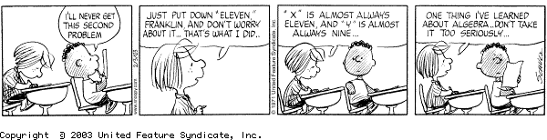

"If you do not like your analyst, see your local algebraist!"
Gert Almkvist
 |
all materials on my websites are licensed under a creative commons attribution-noncommercial 3.0 unported license, unless otherwise noted. |
|
MATH 335 Modern Algebra Fall 2026 |
 |
| Class meetings | Mondays, Wednesdays & Fridays 11:00-11:50 p.m. Thornton Hall 404 |
| Prerequisites | MATH 301 & MATH 225 or 325 with grades of C or better, or permission of the instructor |
| Instructor | Dr. Matthias Beck |
| Office | Thornton Hall 933 |
| Office hours | Mondays 3-4, Wednesdays 1-2, Fridays 10-11, by appointment, and via zoom |
Course objectives. Algebra studies the structure of sets with operations, such as integers with addition and multiplication, or vector spaces with linear maps. The abstract point of view, based on an axiomatic approach, reveals many deep ideas behind seemingly innocent structures--such as the arithmetic of counting numbers--and serves as an elegant organizing tool for the vast universe of modern algebra. Generations of brilliant minds have crystallized these ideas in the ideas in the concept of groups, rings, fields, modules, and their quotient structures and homomorphisms--the topics of MATH 335 & 435. Our main goal in MATH 335 is the study of groups and rings. We will not strive for the maximal possible generality but rather work out as many concrete examples/incarnations of theoretical concepts as possible. Another goal of this course is to make the students immerse in communicating mathematical thoughts (proofs, examples, counterexamples) in a written form.
Syllabus. Topics in this course will include:
Textbooks.
The math. The way to learn math is through doing math. One doesn't become a good piano player by listening to music, and one doesn't learn how to shoot free throws by watching basketball games. Similarly, you don't learn mathematics by watching someone else do mathematics. You will be doing a lot of the math in this course. It is vital and expected that you attend every class meeting. You will get a good feel for the math from there, but it is even more crucial that you do the homework. Working in groups is not only allowed but strongly recommended.
Axioms & first principles. Our class is based on Federico Ardila's Axioms:
I would emphasize within the last axiom that dignity and respect is also something you should treat yourself to, and that every person in our course, students and professor, are expected to be honest. It is likely that some of us will experience challenges and disruptions this semester. Please choose to act with compassion for others and for yourself as we navigate any situations that arise.
Human connectivity. Our class relies heavily on human interaction (among students and between students and the professor). I expect you to be present and engaged in every class session, work with classmates, and share your ideas as part of our course community. Research shows that use of cell phones, laptops, and other devices causes distraction and impairs learning not only for the person using the technology but also for people nearby. Consequently, you may not use technology of this kind during class sessions. (If you have accommodation needs around technology that have been registered with DPRC, please let me know.)
Homework & AI policy. I will assign homework problems as we go through the material. The main point of homework is for you to continuously flex and strengthen your math muscles. You may (and should) work together with your class mates. You may not search the internet or use AI tools for solutions to problems; we will use our creativity, course texts, and peer collaboration as our tools: we will learn math by doing math. (AI is often factually wrong, and it is also deeply problematic, e.g., perpetuating misogyny and racial and cultural biases.)
We can discuss the homework problems at any time during class, and you can hand in (or bring to my office hours) any of your solutions for feedback. The homework problems from any given week will be due before the following Wednesday class. You can either bring your homework to class or send me a pdf copy via email (please use your first name as file name).
SageMath. We will use SageMath in class, and you may (and should) use it outside of our class sessions, too. Here is a good introduction to sage. I have collected a few useful sage commands for our class here.
Grading system. In our course, we will use a specifications-based assessment and grading system, which has the following key features:
| A | B | C | D | |
| Participation (out of 20) | 16 | 14 | 12 | 10 |
| Homework (out of 33) | 29 | 26 | 22 | 16 |
| Definition exams (out of 12) | 9 | 7 | 5 | 3 |
| Problem exams (out of 12) | 10 | 8 | 6 | 4 |
The Canvas site for our course has instructions how you can check your progress at any point. I want to ensure that each of you accomplishes the goals of this course as comfortably and successfully as possible. At any time you feel overwhelmed or lost, please come and talk with me.
Important deadlines are posted in the academic calendar.
Tutoring. San Francisco State's Tutoring Center is located in LIB 220 and they offer specific math tutoring.
Disability access. SF State welcomes the opportunity to support students with disabilities requiring accommodations. Students with disabilities who need accommodations should contact the Disability Programs and Resource Center (DPRC) as soon as possible, and are encouraged to let me know that I will be contacted by the DPRC. The DPRC is available to facilitate the accommodations process in consultation with the student and me. The DPRC is located in the Student Service Building, Room 110, and can be reached by telephone (voice/415-338-2472, video phone/415-335-7210) or by email.
Student disclosures of sexual violence. SF State fosters a campus free of sexual violence including sexual harassment, domestic violence, dating violence, stalking, and/or any form of sex or gender discrimination. If you disclose a personal experience as an SF State student, I am required to notify the Title IX Coordinator. To disclose any such violence confidentially, contact:
For more information on your rights and available resources click here.
Academic integrity and plagiarism. Academic integrity, the ethical presentation of one's own work in accordance with the rules established for this class, is required. Instances of academic misconduct will be reported to the College in which the course is housed, the Division of Graduate Studies (if a graduate student), and the Office of Student Conduct with the report being kept in those offices until a student earns their degree. Any instances of cheating, deceit, fabrication, forgery, plagiarism, unauthorized altering of records or submitting false documents, unauthorized collaboration, unauthorized submission of work previously given credit, or other forms of academic misconduct will be assigned a grade penalty, likely a grade of zero. Failing one or more assignments or examinations for reasons of academic integrity violations may result in a final class grade of F. Students may not withdraw from classes in which they have committed academic misconduct. Consequences for violations of academic integrity may exceed an F on the assignment, examination, or class as determined by the Academic Integrity Review Committee.
Members of our academic community have a responsibility to develop an awareness of academic integrity, to cultivate skills to realize honesty in academic and community work, and to sustain actively academic honor as a core value of our community. Students are expected to engage in behaviors that reflect well upon the university. In addition to attending to one's own actions, the Standards for Student Conduct require that students who witness academic dishonesty notify their faculty/instructor, department chair, or the Office of Student Conduct. Supporting academic integrity enhances the reputation of the university and the value attributed to degrees awarded by the university.
Course content capturing. Students may not capture audio, photos or video from class sessions on their own devices without the explicit permission of the instructor and everyone present, unless part of a DPRC-authorized accommodation. Students may not post any course materials to any third-party sites or post any recordings, screenshots, audio or chat transcripts in any setting outside the class. Violations of this policy are subject to student disciplinary action.
CR/NCR grading. Most Mathematics classes allow CR/NCR grading, but many majors--including Mathematics--do not count CR/NCR grades towards the major. Mathematics majors should not take their Mathematics classes CR/NCR. All other majors should check with their academic advisors before deciding to take a Mathematics class CR/NCR. If--after checking with your advisor--you want to apply for CR/NCR grading, you should log onto this web site and sign up for CR/NCR grading before the deadline. I will not pass out a CR/NCR sheet in class.
Incomplete grades. The Incomplete grade (I) is assigned only to students doing satisfactory work until the last few weeks of a course, when events beyond the students' control prevented them from completing the course. If this happens to you, please discuss with me the possibility of taking an Incomplete rather than withdrawing from a class that you cannot finish. If you would like me to consider an Incomplete, be proactive: approach me as soon as you realize you will not be able to finish the class, and be prepared to present me with a plan how you intend to make up your Incomplete.
Late and retroactive withdrawals. Petitions for withdrawal from a class after the deadline, either before the end of the semester (late withdrawal) or after the semester ends (retroactive withdrawal) must be justified by events that occurred after the deadline. In general, only petitions for withdrawal from all courses will be approved. Late withdrawal from your math course alone is usually not approved.
This syllabus is subject to change. I will try to keep this course web page as updated as possible, however, the most recent information will always be given in class. If you miss a class, it is your responsibility to find out what's going on. Always ask lots of questions in class; my courses are interactive. You are always encouraged to see me in my office.
department of mathematics
san francisco state university
1600
holloway ave
san francisco, ca 94132
mattbeck | @ | sfsu.edu |
"If you do not like your analyst, see your local algebraist!"
Gert Almkvist
|
all materials on my websites are licensed under a creative commons attribution-noncommercial 3.0 unported license, unless otherwise noted. |